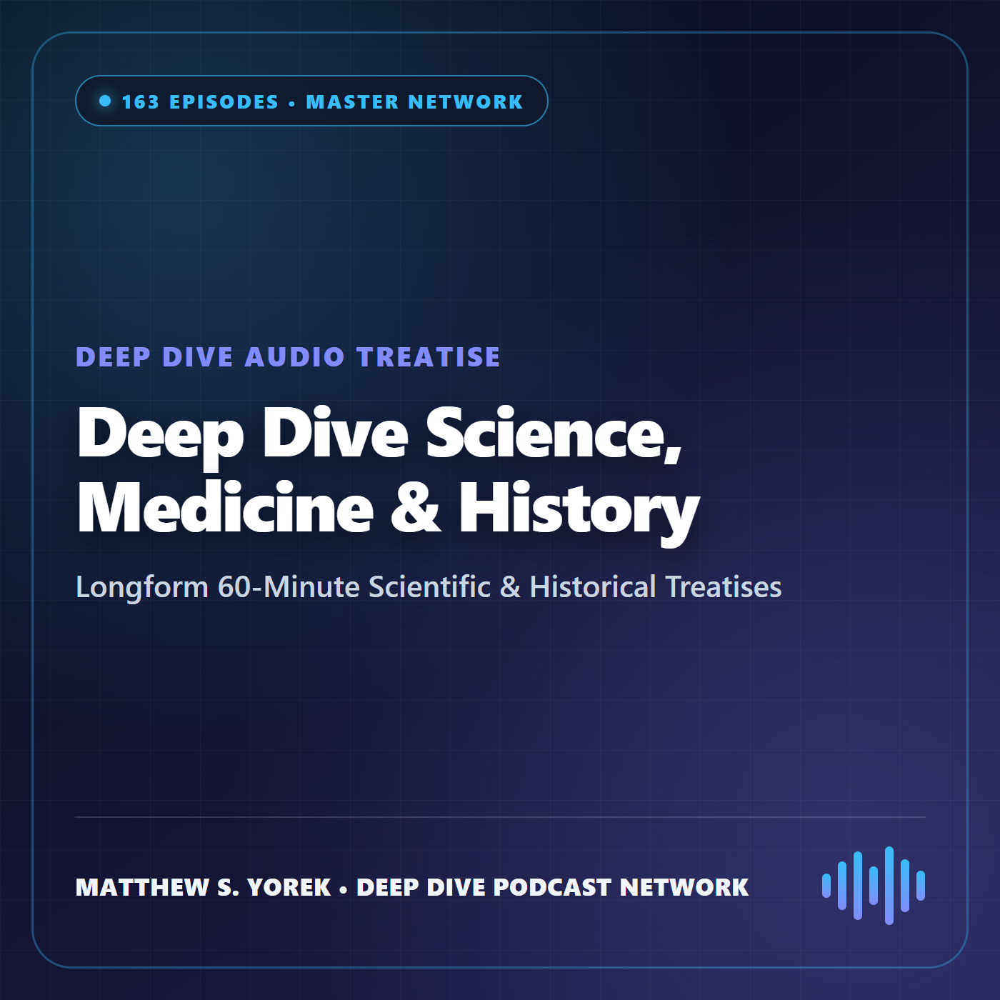
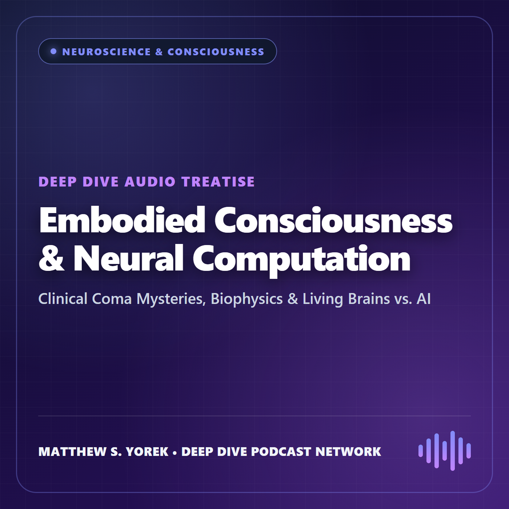
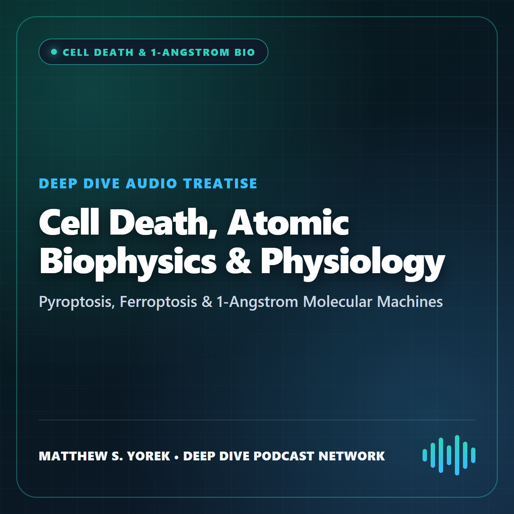
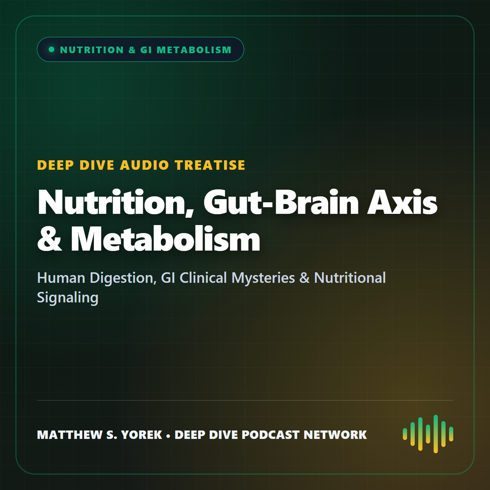
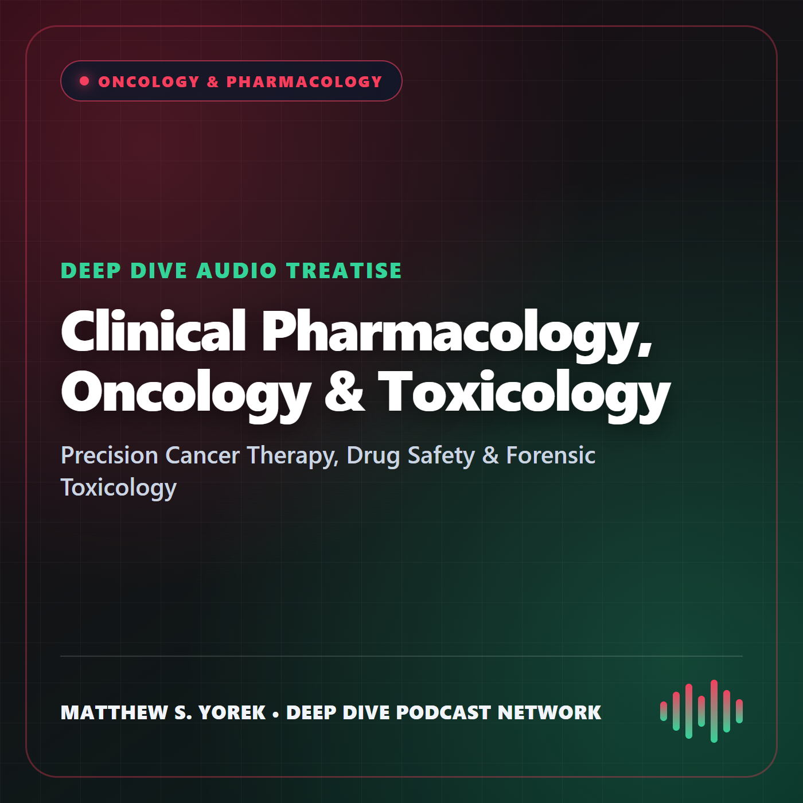
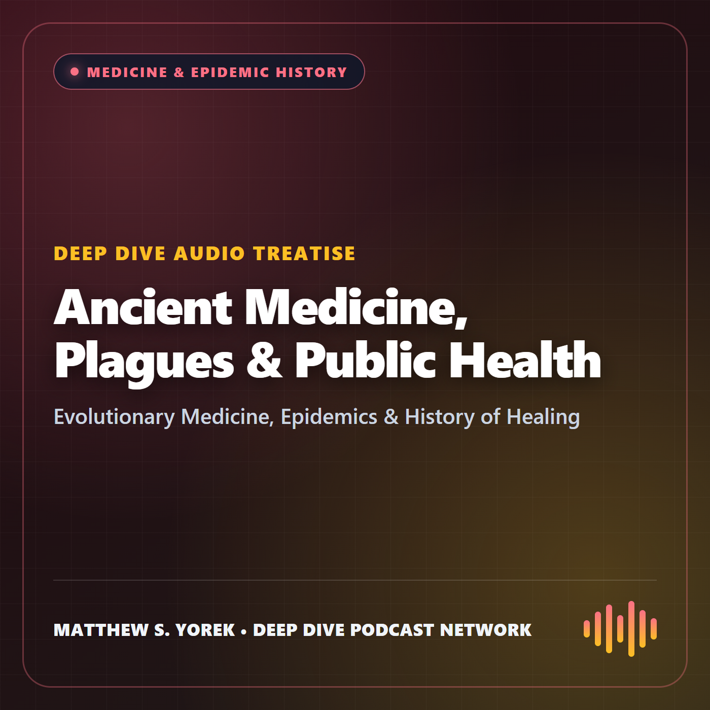
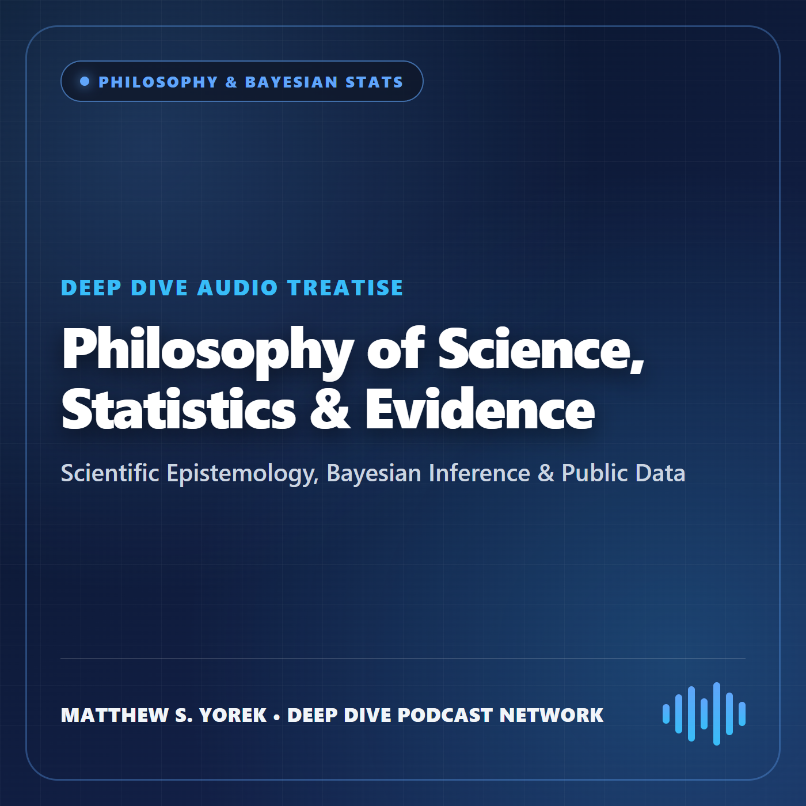

Subscribe to the complete 446-episode Master Feed or individual subject feeds in any podcast app with full offline downloads, lock-screen controls, and variable-speed playback.

Complete 446-episode Deep Dive audio treatise library curated by Matthew S. Yorek: 60-minute explorations spanning embodied consciousness, 1-angstrom molecular biophysics, regulated cell death, precision oncology, clinical pharmacology, forensic toxicology, human digestion & metabolism, ancient medicine, Bayesian philosophy of science, and human origins.

Embodied consciousness, synaptic bioenergetics, clinical disorders of consciousness, stroke syndromes, anesthesia dynamics, and living human neurons vs. artificial neural networks.

Shoulders of Giants cellular bioenergetics & signaling, undergraduate patch-clamp electrophysiology (MultiClamp 700B, Sutter P-1000, Clampfit 11.4), regulated cell death (ferroptosis, pyroptosis, PANoptosis, NETosis), and 1-angstrom journeys through human molecular machines.

Human digestive physiology, gut microbiome signaling, clinical GI emergencies, nutritional pharmacology, and metabolic epigenetics.

Precision oncology, radioligand theranostics, targeted biologics, patient medication safety, and forensic toxicology investigations.

How ancient viruses, parasites, pandemics, mathematical epidemiology, and public health institutions shaped human biology and civilization.

Karl Popper, adversarial collaboration on consciousness theories, Bayesian medical inference, scientific reproducibility, and open evidence.
Merged human origins audio series exploring the evolution of spoken language, proto-writing, cuneiform, Big Gods, ritual cooperation, and sacred history.